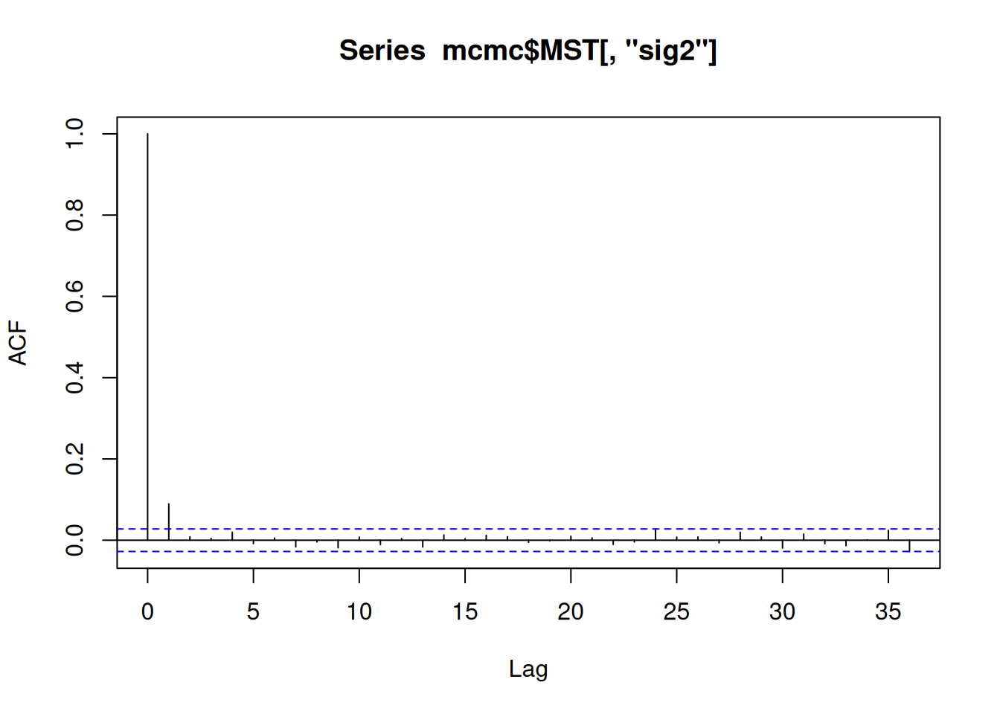

STA 602 HW11
8.1
hand written
8.2
The full conditionals are listed on p. 128 of Hoff, so I am using those and adapting the set up with our priors:
# priors
mu.0 = 75
gam.2.0 = 100
nu.0 = 2
sig.2.0 = 100
# priors to iterate
d.0 = c(-4,-2,0,2,4)
tau.sq.0 = c(10,50,100,500)
# data
n.A = n.B = 16
y.bar.A = 75.2
s.A = 7.3
y.bar.B = 77.5
s.B = 8.1
# iterations
S = 10000
for (j in d.0) {
for (k in tau.sq.0) {
# matrix to store values
data = matrix(data=NA, nrow=S, ncol=5)
colnames(data) = c('mu','sig2','delta','theta1','theta2')
# initial vals
data.init = c(2,100,2,0,0)
data.curr = data.init
# gibb's sampler
for (i in 1:S) {
mu = data.curr[1]
sig.2 = data.curr[2]
delta = data.curr[3]
t1 = data.curr[4]
t2 = data.curr[5]
# draw mu
gam.2.n = 1/(1/gam.2.0 + (n.A + n.B) / sig.2)
mu.n = gam.2.n * (mu.0/gam.2.0 + (n.A * (y.bar.A - delta))/sig.2 +
(n.B * (y.bar.B + delta))/sig.2)
mu = rnorm(1,mu.n,sqrt(gam.2.n))
# draw sigma2
nu.n = nu.0 + n.A + n.B
v = nu.0 * sig.2.0 +
((y.bar.A - (mu + delta))^2 + (n.A-1)*s.A^2) +
((y.bar.B - (mu - delta))^2 + (n.B-1)*s.B^2)
sig.2 = 1 / rgamma(1, nu.n / 2, v / 2)
# sample delta
# with params from above
tau.n.2 = 1/(1/k + (n.A + n.B)/sig.2)
mean.del = tau.n.2 * (j/k + ((n.A * (y.bar.A - mu)) /
sig.2) - ((n.B * (y.bar.B - mu))/sig.2))
delta = rnorm(1,mean.del,sqrt(tau.n.2))
#update values
data.curr[1] = mu
data.curr[2] = sig.2
data.curr[3] = delta
#update thetas
data.curr[4] = mu + delta
data.curr[5] = mu - delta
# saving all values
data[i,] = data.curr
}
#
# i:
dgt0 = mean(data[,'delta'] < 0)
# ii:
interval = round(quantile(data[,'delta'],c(0.025,0.975)),2)
# iii:
prior_corr = 1
post_corr = round(cor(data[,'theta1'],data[,'theta2']),2)
cat("d0:", j, "tau_sq0: ", k,
"p(d<0|Y):",dgt0,
"95% interval:", interval,
"corrs:",prior_corr,post_corr,"\n")
}
}d0: -4 tau_sq0: 10 p(d<0|Y): 0.9005 95% interval: -4.22 0.84 corrs: 1 0.08
d0: -4 tau_sq0: 50 p(d<0|Y): 0.8245 95% interval: -3.97 1.52 corrs: 1 0.01
d0: -4 tau_sq0: 100 p(d<0|Y): 0.8136 95% interval: -3.94 1.47 corrs: 1 0.01
d0: -4 tau_sq0: 500 p(d<0|Y): 0.7985 95% interval: -3.94 1.58 corrs: 1 -0.01
d0: -2 tau_sq0: 10 p(d<0|Y): 0.8447 95% interval: -3.77 1.18 corrs: 1 0.08
d0: -2 tau_sq0: 50 p(d<0|Y): 0.8097 95% interval: -3.86 1.46 corrs: 1 0
d0: -2 tau_sq0: 100 p(d<0|Y): 0.8013 95% interval: -3.9 1.64 corrs: 1 -0.02
d0: -2 tau_sq0: 500 p(d<0|Y): 0.8001 95% interval: -3.83 1.62 corrs: 1 0
d0: 0 tau_sq0: 10 p(d<0|Y): 0.7761 95% interval: -3.47 1.6 corrs: 1 0.08
d0: 0 tau_sq0: 50 p(d<0|Y): 0.8016 95% interval: -3.78 1.55 corrs: 1 0.01
d0: 0 tau_sq0: 100 p(d<0|Y): 0.7954 95% interval: -3.85 1.64 corrs: 1 -0.01
d0: 0 tau_sq0: 500 p(d<0|Y): 0.7973 95% interval: -3.88 1.59 corrs: 1 0
d0: 2 tau_sq0: 10 p(d<0|Y): 0.7017 95% interval: -3.11 1.92 corrs: 1 0.09
d0: 2 tau_sq0: 50 p(d<0|Y): 0.78 95% interval: -3.7 1.67 corrs: 1 0.02
d0: 2 tau_sq0: 100 p(d<0|Y): 0.7848 95% interval: -3.84 1.68 corrs: 1 -0.02
d0: 2 tau_sq0: 500 p(d<0|Y): 0.7975 95% interval: -3.78 1.63 corrs: 1 -0.01
d0: 4 tau_sq0: 10 p(d<0|Y): 0.6072 95% interval: -2.76 2.25 corrs: 1 0.07
d0: 4 tau_sq0: 50 p(d<0|Y): 0.7668 95% interval: -3.59 1.75 corrs: 1 0.02
d0: 4 tau_sq0: 100 p(d<0|Y): 0.7818 95% interval: -3.77 1.68 corrs: 1 0
d0: 4 tau_sq0: 500 p(d<0|Y): 0.797 95% interval: -3.91 1.63 corrs: 1 -0.01 b)
I would tell people of different opinions that even considering a variety of combinations of \(\delta_0\) and \(\tau_0^2\), the posterior probability that \(p(\delta<0 | Y)\) is greater than .5 in every case and in most cases is > .75. Though part of the interval includes 0, it seems reasonably unlikely that having a different prior opinion, given the data, would dramatically change the posterior. There is also weak posterior correlation between \(\theta_A\) and \(\theta_B\).
8.3
a)
# loading data
base_url = 'http://www2.stat.duke.edu/~pdh10/FCBS/Exercises'
# set up a matrix to hold the school data
s.data = matrix(ncol=2)
colnames(s.data) = c('score','school')
# will use source in calculations later
for (i in 1:8) {
a = read.table(paste0(base_url,'/','school',i,'.dat'))
a = a |> mutate(school = i)
colnames(a) = c('score','school')
s.data = rbind(s.data,a)
}
# reorder cols
s.data = s.data[-1,c(2,1)]Referencing Hoff p. 137-138.
Y = s.data
# priors
mu0 = 7
g20 = 5
t20 = 10
eta0 = 2
s20 = 15
nu0 = 2
## starting values
m<-length(unique(Y[,1]))
n<-sv<-ybar<-rep(NA,m)
for(j in 1:m)
{
ybar[j]<-mean(Y[Y[,1]==j,2])
sv[j]<-var(Y[Y[,1]==j,2])
n[j]<-sum(Y[,1]==j)
}
theta<-ybar
sigma2<-mean(sv)
mu<-mean(theta)
tau2<-var(theta)
## setup MCMC
set.seed(1)
S<-5000
THETA<-matrix( nrow=S,ncol=m)
MST<-matrix( nrow=S,ncol=3)
## MCMC algorithm
for(s in 1:S)
{
# sample new values of the thetas
for(j in 1:m)
{
vtheta<-1/(n[j]/sigma2+1/tau2)
etheta<-vtheta*(ybar[j]*n[j]/sigma2+mu/tau2)
theta[j]<-rnorm(1,etheta,sqrt(vtheta))
}
#sample new value of sigma2
nun<-nu0+sum(n)
ss<-nu0*s20;for(j in 1:m){ss<-ss+sum((Y[Y[,1]==j,2]-theta[j])^2)}
sigma2<-1/rgamma(1,nun/2,ss/2)
#sample a new value of mu
vmu<- 1/(m/tau2+1/g20)
emu<- vmu*(m*mean(theta)/tau2 + mu0/g20)
mu<-rnorm(1,emu,sqrt(vmu))
# sample a new value of tau2
etam<-eta0+m
ss<- eta0*t20 + sum( (theta-mu)^2 )
tau2<-1/rgamma(1,etam/2,ss/2)
#store results
THETA[s,]<-theta
MST[s,]<-c(mu,sigma2,tau2)
}
mcmc<-list(THETA=THETA,MST=MST)
colnames(mcmc$MST) = c('sig2','mu','tau2')Assessing convergence:
Effective Sample Size for parameters, meets requirements of > 1000 from problem set up.
effectiveSize(mcmc$MST) sig2 mu tau2
4177.568 4739.021 3618.343 It looks like there’s low autocorrelation so that’s a good sign that the chain can move around the space of the distribution freely.
acf(mcmc$MST[,'sig2'])
acf(mcmc$MST[,'mu'])acf(mcmc$MST[,'tau2'])The trace plots look good as well so I think the chain has converged.
THETA.coda <- mcmc(mcmc$MST[-(1:1000),], start = 1001) # no burn-in steps
plot(THETA.coda)b)
#posterior confidence intervals for params
my_quant <- function(x){
quantile(x,c(0.025,0.975))
}
print("Posterior C.I.")[1] "Posterior C.I."apply(mcmc$MST,2,FUN=my_quant) sig2 mu tau2
2.5% 5.914609 11.73272 1.90546
97.5% 9.127841 17.82171 14.89749# and posterior means
print("Posterior Means: ")[1] "Posterior Means: "apply(mcmc$MST,2,FUN=mean) sig2 mu tau2
7.548069 14.484101 5.601912 Plotting the prior densities below; for my answers here I’m also referencing the coda output from part a) of this question. So overall we learned mu is actually centered around 14 rather than 7 as the prior suggested, and it also has wider variance as evidenced by the fatter tails in the plot in part a). We placed fairly weak priors on both \(\tau^2\) and \(\sigma^2\) so really any new information will modify those. For \(\tau^2\) we see less change from the prior, with a posterior center around 5 and a fairly strong right skew. In \(\sigma^2\) above we have much more equal tails and a center around 8, so that has changed more dramatically from the prior to posterior.
x1 = seq(-20,20,0.1)
mu.prior = dnorm(x1,7,sqrt(5))
plot(x1,mu.prior,type='l')plotInvGamma(1,15)plotInvGamma(1,10)c)
Comparing the two plots, it looks like there is less evidence for between-school variation (though I’m not positive my plots make sense) because the values center around R = 0.3 while the prior doesn’t necessarily have a center. This might be the result of a weak prior (or not plotting properly, I’m not sure!)
# prior plot
s <- seq(0, 5, .01)
d = dinvgamma(s, 1, 10) / (dinvgamma(s, 1, 10) + dinvgamma(s, 1, 15))
q = density(mcmc$MST[,'tau2'] / (mcmc$MST[,'tau2']+ mcmc$MST[,'sig2']))
plot(s, d, type = 'l')plot(q,type='l',main='density posterior plot of R')d)
posterior probability, \(p(\theta_7 < \theta_6)\)
mean(mcmc$THETA[,7] < mcmc$THETA[,6])[1] 0.5104And posterior probability that \(\theta_7\) is the smallest of all schools:
mean(mcmc$THETA[,7] < mcmc$THETA[,c(1:6,8)])[1] 0.7922286e)
The sample means were pretty close to the posterior expectations. I actually plotted the residuals here because they looked very linear, and it seems like there’s fairly little difference since the residuals are centered around 0.
sample.means = c()
for (i in 1:8){
ybar = mean(s.data[s.data[,1]==i,2])
sample.means = c(sample.means,ybar)
}
posterior.means = apply(mcmc$THETA,2,FUN=mean)
plot(posterior.means-sample.means)Comparing the total means here, which is pretty interesting because the difference is quite large (if I’ve done this correctly and the gibb’s sampler worked etc.). This indicates that the samples had a very large variance that we “removed” in the MCMC process. I don’t think that’s technically correct but I think this amounts to having pretty unreliable samples. But obviously averaging across the multiple schools will flatten the data and give us less insight.
cat("Total sample mean:", mean(s.data[,2]),'\n')Total sample mean: 7.691278 cat("Total posterior mean:", mean(mcmc$MST[,'mu']))Total posterior mean: 14.4841